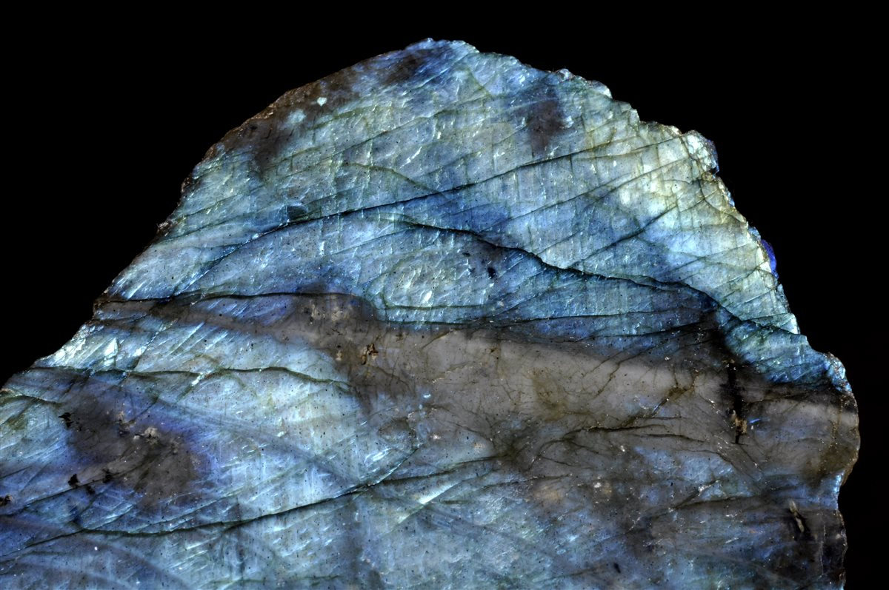
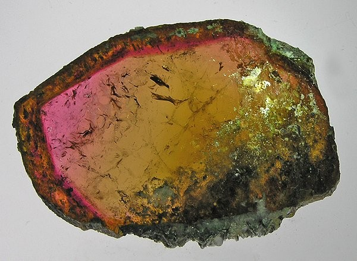
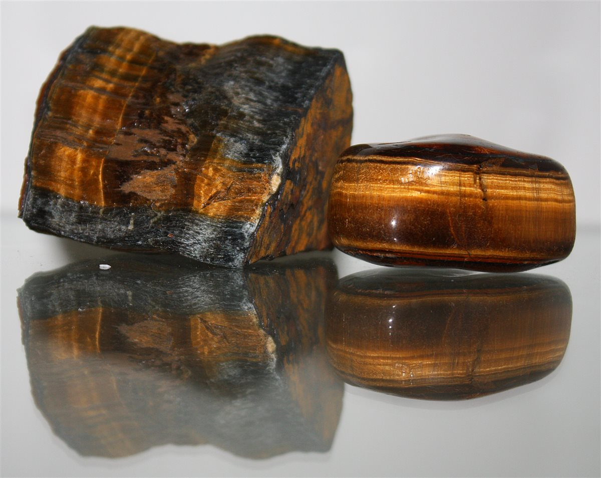
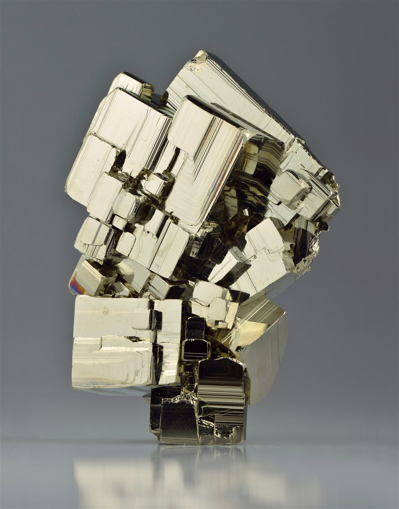

Ametyst
Fioletowy kwarc — kamień spokoju, intuicji i ochrony. Od starożytności symbol trzeźwości umysłu i władzy duchowej.

Kwarc różowy
Kamień miłości bezwarunkowej — otwiera serce, wspomaga uzdrawianie emocjonalne i miłość własną.

Kryształ górski
„Mistrz Uzdrawiania" — wzmacnia działanie wszystkich kryształów, amplifikuje intencje i oczyszcza energię.

Obsydian
Wulkaniczne szkło o niezwykłej sile ochronnej. Ujawnia prawdę, uwalnia traumę i tworzy najsilniejszą tarczę energetyczną.

Labradoryt
Kamień magii i transformacji — słynna labradorescencja kryje w sobie uwięzioną Zorzę Polarną. Chroni aurę i wzmacnia zdolności psychiczne.

Malachit
Zielony kamień transformacji z charakterystycznym wzorem wirów. Chroni przed promieniowaniem, złym okiem i negatywnymi energiami.

Lapis lazuli
Kamień faraonów i bogów — używany nieprzerwanie od 6000 lat. Symbol mądrości, prawdy i boskiej ochrony.

Bursztyn bałtycki
Słoneczny skarb Bałtyku — 44 mln lat zamrożonego czasu. Kamień witalności, ochrony i szczęścia. Polska jest jego największym producentem.

Turmalin
Kameleon kamieni — każdy kolor niesie inne właściwości. Czarny schorl to najsilniejsza tarcza ochronna ze wszystkich minerałów.

Fluoryt
„Geniusz kryształów" — organizuje umysł, wzmacnia koncentrację i naukę. Fluorescencja w UV nadała nazwę całemu zjawisku optycznemu.

Selenite
Księżycowy kamień czystości — oczyszcza inne kryształy, tworzy tarczę białego światła i nigdy się nie wyczerpuje. Jaskinia Naica: kryształy do 11 m!

Tygrysie oko
Kamień odwagi i siły osobistej. Boskie oko boga Ra — noszone przez żołnierzy starożytności jako amulet chroniący w walce.

Agat
Jeden z najstarszych amuletów w historii. Paskowane wzory ukrywają tysiące lat równomiernego wzrostu — kamień stabilności i harmonii.

Jadeit / Nefryt
„Złoto Azji" — ceniony przez 7000 lat jako kamień nieśmiertelności, cnoty i ochrony. Imperialny jadeit z Birmy jest bezcenny.

Piryt
„Złoto głupców" o doskonałych sześcianach — kamień manifestacji, odwagi i ochrony. Odbija negatywną energię jak lustro.